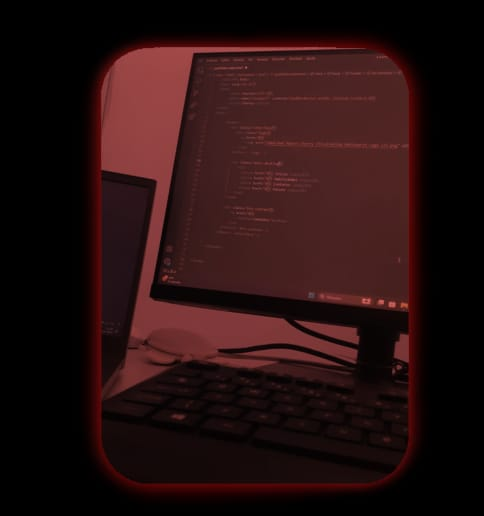

Aqui abaixo estão algumas de minhas redes sociais.
MINHAS HABILIDADES.
T.I
Sou estudante do ensino médio técnico, na escola Valter Nunes de Alencar, onde curso Informática. O curso técnico em informática é uma formação voltada para o desenvolvimento de habilidades práticas em tecnologia da informação.
Build Battle
Em relação a vídeo-games, possuo uma afinidade especifica relacionada a construção e arquitetura de um jogo eletrônico sandbox de sobrevivência bastante conhecido. Em Minecraft, os jogadores exploram um mundo aberto tridimensional intencionalmente em blocos, pixelizados e gerados proceduralmente.
Design
Tenho experiência em trabalhar com ferramentas de design como o Ibis, e estou em constante desenvolvimento na plataforma Photoshop e outros softwares da Adobe.

MEUS COMPRIMENTOS, SOU CHERRY LIMA.
Eu, Ana Richely, sou uma garota de 15 anos, natural da cidade de Araripe, no Sul do Ceara. Desde quando criança, moro com a minha família na zona rual, onde vivo desde então.
Pude perceber em minha própria vida as questões relacionadas à busca por melhores condições de educação e a busca pelo meu futuro, onde almejo cursar direito e me tornar delegada.